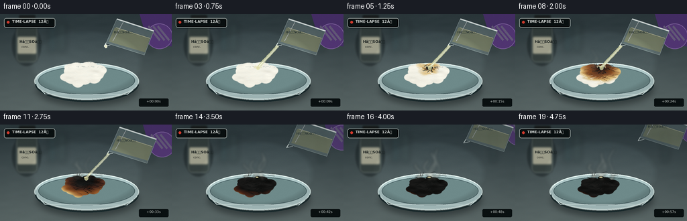
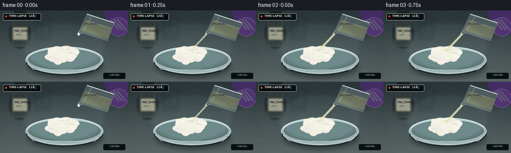
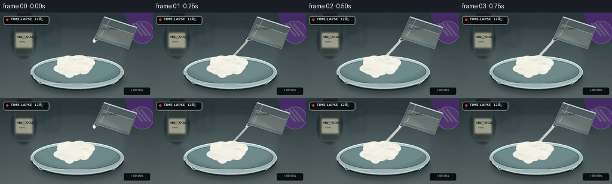

CODING AGENTS AS PIXEL WORLD MODELS
traex/GPT-5.6-Sol · phygen_154
点击播放 · 原生 RGB 像素
逐轮保存的候选
回放视频、检查图与代码变化。
每份候选均可单独播放。实际图片检查记录在下方工具轨迹中。
候选 01播放与检查图
点击播放 · 原生 RGB 像素


展开代码变化
--- 上一保存版本
+++ 本次保存版本
@@ -0,0 +1,275 @@
+from pathlib import Path
+import math
+import numpy as np
+import cv2
+from PIL import Image, ImageDraw, ImageFont, ImageFilter
+import artifact_io
+
+# Deterministic, fully procedural rendering.
+W, H, N, SCALE = 256, 144, 20, 3
+SW, SH = W*SCALE, H*SCALE
+CASE_DIR = Path(__file__).resolve().parent
+rng = np.random.default_rng(154)
+
+def sc(v): return int(round(v*SCALE))
+def pts(seq): return [(sc(x), sc(y)) for x, y in seq]
+def ellipse(draw, box, **kw): draw.ellipse(tuple(sc(x) for x in box), **kw)
+def line(draw, xy, **kw): draw.line(pts(xy), **kw)
+def polygon(draw, xy, **kw): draw.polygon(pts(xy), **kw)
+
+def font(size, bold=False):
+ name = 'DejaVuSans-Bold.ttf' if bold else 'DejaVuSans.ttf'
+ return ImageFont.truetype('/usr/share/fonts/truetype/dejavu/' + name, sc(size))
+
+# Stable texture fields, so the timelapse has no distracting random flicker.
+def smooth_noise(seed, coarse=(26, 15), sigma=2.0):
+ r = np.random.default_rng(seed)
+ a = r.normal(0, 1, coarse).astype(np.float32)
+ a = cv2.resize(a, (SW, SH), interpolation=cv2.INTER_CUBIC)
+ a = cv2.GaussianBlur(a, (0, 0), sigma*SCALE)
+ a = (a-a.min())/(a.max()-a.min()+1e-6)
+ return a
+
+bench_noise = smooth_noise(3, (32,18), .7)
+cotton_noise = smooth_noise(11, (55,31), .45)
+char_noise = smooth_noise(22, (35,22), .5)
+fine_rng = np.random.default_rng(31)
+
+# Fixed cotton lobes and fibers.
+lobes=[]
+for k in range(31):
+ ang=rng.uniform(0,2*math.pi); rr=math.sqrt(rng.uniform())
+ x=124 + math.cos(ang)*rr*25
+ y=88 + math.sin(ang)*rr*13
+ rx=rng.uniform(7,13); ry=rng.uniform(5,9)
+ lobes.append((x,y,rx,ry))
+fibers=[]
+for k in range(95):
+ ang=rng.uniform(0,2*math.pi); rr=math.sqrt(rng.uniform())
+ x=124+math.cos(ang)*rr*28; y=88+math.sin(ang)*rr*15
+ length=rng.uniform(3,10); a=rng.uniform(-.65,.65)
+ fibers.append((x,y,length,a,rng.uniform(.2,1)))
+
+def background(i):
+ yy, xx = np.mgrid[0:SH,0:SW]
+ y=yy/(SH-1); x=xx/(SW-1)
+ # Cool, clean slate laboratory worktop with a soft rear falloff.
+ top=np.array([45,58,62.],np.float32); bottom=np.array([93,107,106.],np.float32)
+ mix=np.clip((y-.12)/.88,0,1)[...,None]
+ arr=top*(1-mix)+bottom*mix
+ arr += (bench_noise[...,None]-.5)*6
+ # broad overhead light pool
+ light=np.exp(-(((x-.48)/.6)**2+((y-.63)/.55)**2))*13
+ arr += light[...,None]
+ return Image.fromarray(np.uint8(np.clip(arr,0,255)), 'RGB').convert('RGBA')
+
+def draw_background_props(im):
+ # Out-of-focus reagent bottle establishes the chemical/laboratory context.
+ blur=Image.new('RGBA',(SW,SH),(0,0,0,0)); d=ImageDraw.Draw(blur)
+ ellipse(d,(18,15,61,77),fill=(16,25,27,115))
+ d.rounded_rectangle((sc(24),sc(11),sc(56),sc(72)),radius=sc(6),fill=(54,64,60,180),outline=(148,159,147,75),width=sc(1))
+ d.rectangle((sc(31),sc(3),sc(50),sc(15)),fill=(38,43,40,230))
+ d.rectangle((sc(29),sc(2),sc(52),sc(8)),fill=(28,32,31,245))
+ d.rounded_rectangle((sc(26),sc(34),sc(54),sc(59)),radius=sc(2),fill=(223,218,187,180))
+ blur=blur.filter(ImageFilter.GaussianBlur(sc(1.2)))
+ im.alpha_composite(blur)
+ # Label is kept somewhat sharp enough to read.
+ d=ImageDraw.Draw(im)
+ d.text((sc(29),sc(38)),'HâSOâ',font=font(5.3,True),fill=(28,35,34,185))
+ d.text((sc(32),sc(46)),'conc.',font=font(4.2),fill=(39,43,40,170))
+ # Defocused rack shapes in the distance.
+ haze=Image.new('RGBA',(SW,SH),(0,0,0,0)); hd=ImageDraw.Draw(haze)
+ for x,c in [(72,(44,73,77,70)),(87,(62,84,83,65)),(218,(43,61,63,55))]:
+ hd.rounded_rectangle((sc(x),sc(11),sc(x+11),sc(57)),radius=sc(4),fill=c)
+ haze=haze.filter(ImageFilter.GaussianBlur(sc(4)))
+ im.alpha_composite(haze)
+
+def draw_dish(im):
+ # Glass Petri dish: shadow, body, back and front rims.
+ sh=Image.new('RGBA',(SW,SH),(0,0,0,0)); sd=ImageDraw.Draw(sh)
+ ellipse(sd,(55,87,205,137),fill=(6,13,15,115))
+ sh=sh.filter(ImageFilter.GaussianBlur(sc(5)))
+ im.alpha_composite(sh)
+ d=ImageDraw.Draw(im)
+ ellipse(d,(51,73,207,127),fill=(177,202,202,31),outline=(215,233,230,125),width=sc(1.2))
+ ellipse(d,(57,78,201,120),fill=(110,138,138,20),outline=(75,100,103,110),width=sc(1))
+ # Back rim bright reflection and front glass thickness.
+ d.arc(tuple(sc(x) for x in (53,73,206,126)),183,351,fill=(237,250,246,172),width=sc(1))
+ d.arc(tuple(sc(x) for x in (52,76,207,131)),4,178,fill=(26,44,47,145),width=sc(2))
+ d.arc(tuple(sc(x) for x in (55,78,204,128)),6,176,fill=(202,224,222,132),width=sc(1))
+ line(d,[(61,113),(67,119),(189,120),(198,113)],fill=(220,239,237,70),width=sc(1))
+
+def cotton_layer(frame):
+ # The reaction starts once the viscous stream reaches the cotton.
+ p=np.clip((frame-2)/14.0,0,1)
+ # Cellulose mass visibly shrinks and slumps as water is stripped away.
+ sx=1-.10*p; sy=1-.23*p
+ cy=88+3.8*p
+ mask=Image.new('L',(SW,SH),0); md=ImageDraw.Draw(mask)
+ for x,y,rx,ry in lobes:
+ xx=124+(x-124)*sx; yy=cy+(y-88)*sy
+ ellipse(md,(xx-rx*sx,yy-ry*sy,xx+rx*sx,yy+ry*sy),fill=255)
+ mask=mask.filter(ImageFilter.GaussianBlur(sc(.45)))
+ ma=np.asarray(mask,dtype=np.float32)/255
+ yy,xx=np.mgrid[0:SH,0:SW]; X=xx/SCALE; Y=yy/SCALE
+ # Expanding irregular dehydration front, centered exactly under the stream.
+ dist=np.sqrt(((X-128)/(38*sx))**2+((Y-(80+2*p))/(25*sy))**2)
+ q=np.clip(p*2.10-dist*.88+(char_noise-.5)*.38,0,1)
+ # Warm ivory -> ochre -> umber -> almost-black carbon.
+ stops=[(0.0,np.array([239,237,225.])),(.20,np.array([211,178,111.])),
+ (.43,np.array([139,80,37.])),(.70,np.array([66,34,23.])),(1.0,np.array([18,18,17.]))]
+ rgb=np.zeros((SH,SW,3),np.float32)
+ for (a,ca),(b,cb) in zip(stops[:-1],stops[1:]):
+ t=np.clip((q-a)/(b-a),0,1)[...,None]
+ seg=ca*(1-t)+cb*t
+ sel=((q>=a)&(q<=b))[...,None]
+ rgb=np.where(sel,seg,rgb)
+ rgb=np.where((q>=stops[-1][0])[...,None],stops[-1][1],rgb)
+ # Fibrous texture and modeled upper-left light.
+ texture=(cotton_noise-.5)*26*(1-.35*q)+(char_noise-.5)*22*q
+ shade=(1-np.clip((Y-71)/44,0,1))*8 - np.abs(X-118)/28
+ rgb += texture[...,None]+shade[...,None]
+ alpha=np.uint8(np.clip(ma*255,0,255))
+ arr=np.dstack([np.uint8(np.clip(rgb,0,255)),alpha])
+ lay=Image.fromarray(arr,'RGBA')
+ # Fine fiber strands, progressively darkened/collapsed with the material.
+ fd=ImageDraw.Draw(lay)
+ for x,y,L,a,z in fibers:
+ xx=124+(x-124)*sx; yy0=cy+(y-88)*sy
+ ex=xx+math.cos(a)*L*sx; ey=yy0+math.sin(a)*L*sy
+ dd=math.sqrt(((xx-128)/(38*sx))**2+((yy0-(80+2*p))/(25*sy))**2)
+ fq=np.clip(p*2.1-dd*.88,0,1)
+ if fq<.24: col=(255,253,242,int(65+65*z))
+ elif fq<.62: col=(94,54,29,int(85+50*z))
+ else: col=(7,7,6,int(85+70*z))
+ line(fd,[(xx,yy0),(ex,ey)],fill=col,width=max(1,sc(.35+z*.25)))
+ # Clip fiber strokes back to cotton silhouette.
+ aa=np.asarray(lay).copy(); aa[:,:,3]=np.minimum(aa[:,:,3],np.asarray(mask)); lay=Image.fromarray(aa,'RGBA')
+ # Carbonized crinkles and glistening acid at the impact zone.
+ cd=ImageDraw.Draw(lay)
+ if p>.12:
+ for k in range(12):
+ ang=2*math.pi*k/12+0.4*math.sin(k*2.1)
+ r=(6+17*k/12)*min(1,p*1.5)
+ x1=128+math.cos(ang)*r; y1=82+math.sin(ang)*r*.52
+ x2=128+math.cos(ang+.32)*(r+7); y2=82+math.sin(ang+.32)*(r+7)*.52
+ line(cd,[(x1,y1),(x2,y2)],fill=(8,8,7,int(40+100*p)),width=sc(.55))
+ ellipse(cd,(123,77,133,83),fill=(14,15,12,int(120+70*p)))
+ dgl=1+1.2*math.sin(frame*.9)**2
+ ellipse(cd,(125,77.7,128+dgl,79.5),fill=(235,222,160,145))
+ return lay, p
+
+def draw_beaker_and_stream(im, frame):
+ # Tipped small glass beaker held by a purple nitrile glove.
+ retreat=np.clip((frame-10)/7,0,1)
+ dx=retreat*28; dy=-retreat*24
+ alpha=int(255*(1-.30*retreat))
+ lay=Image.new('RGBA',(SW,SH),(0,0,0,0)); d=ImageDraw.Draw(lay)
+ # Hand behind the glass, entering from upper right.
+ polygon(d,[(206+dx,-7+dy),(263+dx,1+dy),(263+dx,49+dy),(233+dx,46+dy),(216+dx,27+dy)],fill=(75,50,111,alpha))
+ ellipse(d,(218+dx,14+dy,257+dx,52+dy),fill=(90,59,127,alpha),outline=(135,104,169,alpha),width=sc(1))
+ for off in (0,7,14):
+ line(d,[(221+dx+off,18+dy),(238+dx+off,39+dy)],fill=(155,124,184,int(alpha*.55)),width=sc(3))
+ # Beaker silhouette and clear pale acid volume.
+ vessel=[(174+dx,7+dy),(229+dx,25+dy),(215+dx,61+dy),(158+dx,43+dy)]
+ polygon(d,vessel,fill=(198,224,222,int(alpha*.25)),outline=(224,243,239,int(alpha*.80)))
+ liquid=[(171+dx,20+dy),(223+dx,36+dy),(216+dx,57+dy),(162+dx,41+dy)]
+ polygon(d,liquid,fill=(213,214,151,int(alpha*.40)))
+ line(d,[(173+dx,20+dy),(223+dx,36+dy)],fill=(246,241,194,int(alpha*.68)),width=sc(1))
+ # Open elliptical rim and pouring lip.
+ line(d,[(174+dx,7+dy),(229+dx,25+dy)],fill=(244,252,250,int(alpha*.88)),width=sc(2))
+ line(d,[(176+dx,10+dy),(227+dx,27+dy)],fill=(104,141,144,int(alpha*.48)),width=sc(1))
+ line(d,[(158+dx,43+dy),(155+dx,48+dy),(164+dx,46+dy)],fill=(238,249,245,int(alpha*.9)),width=sc(1))
+ line(d,[(184+dx,11+dy),(168+dx,40+dy)],fill=(255,255,255,int(alpha*.58)),width=sc(1))
+ # Small label on the glass.
+ d.text((sc(184+dx),sc(27+dy)),'HâSOâ',font=font(4.6,True),fill=(37,50,48,int(alpha*.66)),anchor='mm')
+ im.alpha_composite(lay)
+
+ # Flow from frame 1 to 11, thickest in the middle; transparent but glossy.
+ if 1 <= frame <= 11:
+ flow=np.clip(min((frame)/2.0,(12-frame)/2.0),.22,1)
+ stream=Image.new('RGBA',(SW,SH),(0,0,0,0)); sd=ImageDraw.Draw(stream)
+ x0=158+dx; y0=47+dy
+ # Cubic path sampled for a natural, slightly bowed viscous pour.
+ arr=[]
+ for u in np.linspace(0,1,31):
+ x=(1-u)**3*x0+3*(1-u)**2*u*(151+dx*.45)+3*(1-u)*u*u*137+u**3*128
+ y=(1-u)**3*y0+3*(1-u)**2*u*(56+dy*.35)+3*(1-u)*u*u*69+u**3*80
+ arr.append((x,y))
+ line(sd,arr,fill=(214,218,167,int(145+65*flow)),width=sc(2.3+2.0*flow),joint='curve')
+ line(sd,[(x+.55,y-.15) for x,y in arr],fill=(255,255,231,int(125+75*flow)),width=sc(.65+flow*.45),joint='curve')
+ # Bulbous meniscus and tiny impact splash.
+ ellipse(sd,(125.8,77.2,131.4,83.4),fill=(224,223,167,160),outline=(250,248,218,190),width=sc(.45))
+ if 3 <= frame <= 8:
+ for ang in (-2.7,-2.2,-.6,-.25):
+ rr=5+(frame%3)*.6
+ x=128+math.cos(ang)*rr; y=80+math.sin(ang)*rr*.55
+ ellipse(sd,(x-1,y-1,x+1,y+1),fill=(229,228,183,145))
+ im.alpha_composite(stream)
+ elif frame==0:
+ # A pendant drop signals the pour about to begin.
+ d=ImageDraw.Draw(im)
+ ellipse(d,(155.7,45.2,159.8,50.7),fill=(228,229,190,180),outline=(255,255,241,205),width=sc(.5))
+
+def draw_vapor(im, frame, p):
+ if frame < 6: return
+ vap=Image.new('RGBA',(SW,SH),(0,0,0,0)); vd=ImageDraw.Draw(vap)
+ strength=np.clip((frame-5)/10,0,1)
+ count=2+int(strength*3)
+ for k in range(count):
+ phase=frame*.31+k*1.7
+ bx=117+k*6+4*math.sin(phase); by=82+k*.4
+ arr=[]
+ for j in range(28):
+ u=j/27
+ x=bx+math.sin(u*7+phase)*3.7+u*(k-2)*1.5
+ y=by-u*(24+6*k)
+ arr.append((x,y))
+ a=int((28+35*strength)*(1-k*.10))
+ line(vd,arr,fill=(225,224,208,a),width=sc(1.8+strength*1.4))
+ vap=vap.filter(ImageFilter.GaussianBlur(sc(2.0)))
+ im.alpha_composite(vap)
+
+def add_overlay(im, frame):
+ d=ImageDraw.Draw(im)
+ # Restrained documentary overlay identifies the accelerated chronology.
+ d.rounded_rectangle((sc(6),sc(6),sc(82),sc(20)),radius=sc(3),fill=(10,17,18,125),outline=(220,231,226,34),width=sc(.5))
+ ellipse(d,(10,10,14,14),fill=(235,66,51,235))
+ d.text((sc(18),sc(8.1)),'TIME-LAPSE 12Ã',font=font(5.3,True),fill=(239,244,241,225))
+ # Accelerated elapsed-time counter reinforces timelapse without obscuring action.
+ elapsed=frame*3
+ label=f'+00:{elapsed:02d}s'
+ d.rounded_rectangle((sc(207),sc(126),sc(251),sc(138)),radius=sc(2),fill=(11,18,19,108))
+ d.text((sc(229),sc(127.5)),label,font=font(5.1),fill=(229,236,232,220),anchor='ma')
+
+def finish(im, frame):
+ arr=np.asarray(im.convert('RGB')).astype(np.float32)
+ yy,xx=np.mgrid[0:SH,0:SW]
+ nx=(xx-SW/2)/(SW/2); ny=(yy-SH/2)/(SH/2)
+ vign=np.clip((nx*nx+ny*ny-.35)*10,0,1)[...,None]
+ arr*=1-.11*vign
+ # Very light stable sensor texture.
+ grain=np.random.default_rng(900+frame).normal(0,.75,(SH,SW,1))
+ arr=np.clip(arr+grain,0,255).astype(np.uint8)
+ return np.asarray(Image.fromarray(arr).resize((W,H),Image.Resampling.LANCZOS),dtype=np.uint8)
+
+def render(frame):
+ im=background(frame)
+ draw_background_props(im)
+ draw_dish(im)
+ cotton,p=cotton_layer(frame)
+ im.alpha_composite(cotton)
+ # Vapor sits partly in front of the cotton but behind the pouring vessel.
+ draw_vapor(im,frame,p)
+ draw_beaker_and_stream(im,frame)
+ add_overlay(im,frame)
+ return finish(im,frame)
+
+def main():
+ frames=np.stack([render(i) for i in range(N)],axis=0)
+ assert frames.shape==(20,144,256,3) and frames.dtype==np.uint8
+ artifact_io.save(frames,CASE_DIR)
+ print('saved',frames.shape,frames.dtype,'to',CASE_DIR)
+
+if __name__=='__main__':
+ main()
候选 02播放与检查图
点击播放 · 原生 RGB 像素

展开代码变化
--- 上一保存版本
+++ 本次保存版本
@@ -174,8 +174,8 @@
vessel=[(174+dx,7+dy),(229+dx,25+dy),(215+dx,61+dy),(158+dx,43+dy)]
polygon(d,vessel,fill=(198,224,222,int(alpha*.25)),outline=(224,243,239,int(alpha*.80)))
liquid=[(171+dx,20+dy),(223+dx,36+dy),(216+dx,57+dy),(162+dx,41+dy)]
- polygon(d,liquid,fill=(213,214,151,int(alpha*.40)))
- line(d,[(173+dx,20+dy),(223+dx,36+dy)],fill=(246,241,194,int(alpha*.68)),width=sc(1))
+ polygon(d,liquid,fill=(222,230,216,int(alpha*.36)))
+ line(d,[(173+dx,20+dy),(223+dx,36+dy)],fill=(244,249,236,int(alpha*.68)),width=sc(1))
# Open elliptical rim and pouring lip.
line(d,[(174+dx,7+dy),(229+dx,25+dy)],fill=(244,252,250,int(alpha*.88)),width=sc(2))
line(d,[(176+dx,10+dy),(227+dx,27+dy)],fill=(104,141,144,int(alpha*.48)),width=sc(1))
@@ -196,20 +196,20 @@
x=(1-u)**3*x0+3*(1-u)**2*u*(151+dx*.45)+3*(1-u)*u*u*137+u**3*128
y=(1-u)**3*y0+3*(1-u)**2*u*(56+dy*.35)+3*(1-u)*u*u*69+u**3*80
arr.append((x,y))
- line(sd,arr,fill=(214,218,167,int(145+65*flow)),width=sc(2.3+2.0*flow),joint='curve')
- line(sd,[(x+.55,y-.15) for x,y in arr],fill=(255,255,231,int(125+75*flow)),width=sc(.65+flow*.45),joint='curve')
+ line(sd,arr,fill=(224,232,217,int(135+60*flow)),width=sc(2.3+2.0*flow),joint='curve')
+ line(sd,[(x+.55,y-.15) for x,y in arr],fill=(255,255,247,int(130+70*flow)),width=sc(.65+flow*.45),joint='curve')
# Bulbous meniscus and tiny impact splash.
- ellipse(sd,(125.8,77.2,131.4,83.4),fill=(224,223,167,160),outline=(250,248,218,190),width=sc(.45))
+ ellipse(sd,(125.8,77.2,131.4,83.4),fill=(226,234,218,150),outline=(252,255,248,190),width=sc(.45))
if 3 <= frame <= 8:
for ang in (-2.7,-2.2,-.6,-.25):
rr=5+(frame%3)*.6
x=128+math.cos(ang)*rr; y=80+math.sin(ang)*rr*.55
- ellipse(sd,(x-1,y-1,x+1,y+1),fill=(229,228,183,145))
+ ellipse(sd,(x-1,y-1,x+1,y+1),fill=(232,239,225,135))
im.alpha_composite(stream)
elif frame==0:
# A pendant drop signals the pour about to begin.
d=ImageDraw.Draw(im)
- ellipse(d,(155.7,45.2,159.8,50.7),fill=(228,229,190,180),outline=(255,255,241,205),width=sc(.5))
+ ellipse(d,(155.7,45.2,159.8,50.7),fill=(231,239,225,170),outline=(255,255,250,205),width=sc(.5))
def draw_vapor(im, frame, p):
if frame < 6: return
可观测工具轨迹
实际执行的命令与返回图片。
命令 1exit 0
/bin/bash -lc "cat prompt.txt && printf '\\n--- GENERATION_RULES.md ---\\n' && cat GENERATION_RULES.md"
命令 2exit 0
/bin/bash -lc "cat task_spec.json && printf '\\n--- files ---\\n' && find . -maxdepth 2 -type f -printf '%p\\n' | sort"
命令 3exit 0
/bin/bash -lc "command -v ffmpeg; command -v python3; command -v blender; python3 - <<'PY' mods=['PIL','numpy','cv2','imageio','matplotlib','cairo','skimage'] for m in mods: try: x=__import__(m); print(m,'OK',getattr(x,'__version__','')) except Exception as e: print(m,'NO',e) PY"
命令 4exit 0
/bin/bash -lc 'cat artifact_io.py'
命令 5exit 0
/bin/bash -lc "cat > generate.py <<'PY'
from pathlib import Path
import math
import numpy as np
import cv2
from PIL import Image, ImageDraw, ImageFont, ImageFilter
import artifact_io
# Deterministic, fully procedural rendering.
W, H, N, SCALE = 256, 144, 20, 3
SW, SH = W*SCALE, H*SCALE
CASE_DIR = Path(__file__).resolve().parent
rng = np.random.default_rng(154)
def sc(v): return int(round(v*SCALE))
def pts(seq): return [(sc(x), sc(y)) for x, y in seq]
def ellipse(draw, box, **kw): draw.ellipse(tuple(sc(x) for x in box), **kw)
def line(draw, xy, **kw): draw.line(pts(xy), **kw)
def polygon(draw, xy, **kw): draw.polygon(pts(xy), **kw)
def font(size, bold=False):
name = 'DejaVuSans-Bold.ttf' if bold else 'DejaVuSans.ttf'
return ImageFont.truetype('/usr/share/fonts/truetype/dejavu/' + name, sc(size))
# Stable texture fields, so the timelapse has no distracting random flicker.
def smooth_noise(seed, coarse=(26, 15), sigma=2.0):
r = np.random.default_rng(seed)
a = r.normal(0, 1, coarse).astype(np.float32)
a = cv2.resize(a, (SW, SH), interpolation=cv2.INTER_CUBIC)
a = cv2.GaussianBlur(a, (0, 0), sigma*SCALE)
a = (a-a.min())/(a.max()-a.min()+1e-6)
return a
bench_noise = smooth_noise(3, (32,18), .7)
cotton_noise = smooth_noise(11, (55,31), .45)
char_noise = smooth_noise(22, (35,22), .5)
fine_rng = np.random.default_rng(31)
# Fixed cotton lobes and fibers.
lobes=[]
for k in range(31):
ang=rng.uniform(0,2*math.pi); rr=math.sqrt(rng.uniform())
x=124 + math.cos(ang)*rr*25
y=88 + math.sin(ang)*rr*13
rx=rng.uniform(7,13); ry=rng.uniform(5,9)
lobes.append((x,y,rx,ry))
fibers=[]
for k in range(95):
ang=rng.uniform(0,2*math.pi); rr=math.sqrt(rng.uniform())
x=124+math.cos(ang)*rr*28; y=88+math.sin(ang)*rr*15
length=rng.uniform(3,10); a=rng.uniform(-.65,.65)
fibers.append((x,y,length,a,rng.uniform(.2,1)))
def background(i):
yy, xx = np.mgrid[0:SH,0:SW]
y=yy/(SH-1); x=xx/(SW-1)
# Cool, clean slate laboratory worktop with a soft rear falloff.
top=np.array([45,58,62.],np.float32); bottom=np.array([93,107,106.],np.float32)
mix=np.clip((y-.12)/.88,0,1)[...,None]
arr=top*(1-mix)+bottom*mix
arr += (bench_noise[...,None]-.5)*6
# broad overhead light pool
light=np.exp(-(((x-.48)/.6)**2+((y-.63)/.55)**2))*13
arr += light[...,None]
return Image.fromarray(np.uint8(np.clip(arr,0,255)), 'RGB').convert('RGBA')
def draw_background_props(im):
# Out-of-focus reagent bottle establishes the chemical/laboratory context.
blur=Image.new('RGBA',(SW,SH),(0,0,0,0)); d=ImageDraw.Draw(blur)
ellipse(d,(18,15,61,77),fill=(16,25,27,115))
d.rounded_rectangle((sc(24),sc(11),sc(56),sc(72)),radius=sc(6),fill=(54,64,60,180),outline=(148,159,147,75),width=sc(1))
d.rectangle((sc(31),sc(3),sc(50),sc(15)),fill=(38,43,40,230))
d.rectangle((sc(29),sc(2),sc(52),sc(8)),fill=(28,32,31,245))
d.rounded_rectangle((sc(26),sc(34),sc(54),sc(59)),radius=sc(2),fill=(223,218,187,180))
blur=blur.filter(ImageFilter.GaussianBlur(sc(1.2)))
im.alpha_composite(blur)
# Label is kept somewhat sharp enough to read.
d=ImageDraw.Draw(im)
d.text((sc(29),sc(38)),'HâSOâ',font=font(5.3,True),fill=(28,35,34,185))
d.text((sc(32),sc(46)),'conc.',font=font(4.2),fill=(39,43,40,170))
# Defocused rack shapes in the distance.
haze=Image.new('RGBA',(SW,SH),(0,0,0,0)); hd=ImageDraw.Draw(haze)
for x,c in [(72,(44,73,77,70)),(87,(62,84,83,65)),(218,(43,61,63,55))]:
hd.rounded_rectangle((sc(x),sc(11),sc(x+11),sc(57)),radius=sc(4),fill=c)
haze=haze.filter(ImageFilter.GaussianBlur(sc(4)))
im.alpha_composite(haze)
def draw_dish(im):
# Glass Petri dish: shadow, body, back and front rims.
sh=Image.new('RGBA',(SW,SH),(0,0,0,0)); sd=ImageDraw.Draw(sh)
ellipse(sd,(55,87,205,137),fill=(6,13,15,115))
sh=sh.filter(ImageFilter.GaussianBlur(sc(5)))
im.alpha_composite(sh)
d=ImageDraw.Draw(im)
ellipse(d,(51,73,207,127),fill=(177,202,202,31),outline=(215,233,230,125),width=sc(1.2))
ellipse(d,(57,78,201,120),fill=(110,138,138,20),outline=(75,100,103,110),width=sc(1))
# Back rim bright reflection and front glass thickness.
d.arc(tuple(sc(x) for x in (53,73,206,126)),183,351,fill=(237,250,246,172),width=sc(1))
d.arc(tuple(sc(x) for x in (52,76,207,131)),4,178,fill=(26,44,47,145),width=sc(2))
d.arc(tuple(sc(x) for x in (55,78,204,128)),6,176,fill=(202,224,222,132),width=sc(1))
line(d,[(61,113),(67,119),(189,120),(198,113)],fill=(220,239,237,70),width=sc(1))
def cotton_layer(frame):
# The reaction starts once the viscous stream reaches the cotton.
p=np.clip((frame-2)/14.0,0,1)
# Cellulose mass visibly shrinks and slumps as water is stripped away.
sx=1-.10*p; sy=1-.23*p
cy=88+3.8*p
mask=Image.new('L',(SW,SH),0); md=ImageDraw.Draw(mask)
for x,y,rx,ry in lobes:
xx=124+(x-124)*sx; yy=cy+(y-88)*sy
ellipse(md,(xx-rx*sx,yy-ry*sy,xx+rx*sx,yy+ry*sy),fill=255)
mask=mask.filter(ImageFilter.GaussianBlur(sc(.45)))
ma=np.asarray(mask,dtype=np.float32)/255
yy,xx=np.mgrid[0:SH,0:SW]; X=xx/SCALE; Y=yy/SCALE
# Expanding irregular dehydration front, centered exactly under the stream.
dist=np.sqrt(((X-128)/(38*sx))**2+((Y-(80+2*p))/(25*sy))**2)
q=np.clip(p*2.10-dist*.88+(char_noise-.5)*.38,0,1)
# Warm ivory -> ochre -> umber -> almost-black carbon.
stops=[(0.0,np.array([239,237,225.])),(.20,np.array([211,178,111.])),
(.43,np.array([139,80,37.])),(.70,np.array([66,34,23.])),(1.0,np.array([18,18,17.]))]
rgb=np.zeros((SH,SW,3),np.float32)
for (a,ca),(b,cb) in zip(stops[:-1],stops[1:]):
t=np.clip((q-a)/(b-a),0,1)[...,None]
seg=ca*(1-t)+cb*t
sel=((q>=a)&(q<=b))[...,None]
rgb=np.where(sel,seg,rgb)
rgb=np.where((q>=stops[-1][0])[...,None],stops[-1][1],rgb)
# Fibrous texture and modeled upper-left light.
texture=(cotton_noise-.5)*26*(1-.35*q)+(char_noise-.5)*22*q
shade=(1-np.clip((Y-71)/44,0,1))*8 - np.abs(X-118)/28
rgb += texture[...,None]+shade[...,None]
alpha=np.uint8(np.clip(ma*255,0,255))
arr=np.dstack([np.uint8(np.clip(rgb,0,255)),alpha])
lay=Image.fromarray(arr,'RGBA')
# Fine fiber strands, progressively darkened/collapsed with the material.
fd=ImageDraw.Draw(lay)
for x,y,L,a,z in fibers:
xx=124+(x-124)*sx; yy0=cy+(y-88)*sy
ex=xx+math.cos(a)*L*sx; ey=yy0+math.sin(a)*L*sy
dd=math.sqrt(((xx-128)/(38*sx))**2+((yy0-(80+2*p))/(25*sy))**2)
fq=np.clip(p*2.1-dd*.88,0,1)
if fq<.24: col=(255,253,242,int(65+65*z))
elif fq<.62: col=(94,54,29,int(85+50*z))
else: col=(7,7,6,int(85+70*z))
line(fd,[(xx,yy0),(ex,ey)],fill=col,width=max(1,sc(.35+z*.25)))
# Clip fiber strokes back to cotton silhouette.
aa=np.asarray(lay).copy(); aa[:,:,3]=np.minimum(aa[:,:,3],np.asarray(mask)); lay=Image.fromarray(aa,'RGBA')
# Carbonized crinkles and glistening acid at the impact zone.
cd=ImageDraw.Draw(lay)
if p>.12:
for k in range(12):
ang=2*math.pi*k/12+0.4*math.sin(k*2.1)
r=(6+17*k/12)*min(1,p*1.5)
x1=128+math.cos(ang)*r; y1=82+math.sin(ang)*r*.52
x2=128+math.cos(ang+.32)*(r+7); y2=82+math.sin(ang+.32)*(r+7)*.52
line(cd,[(x1,y1),(x2,y2)],fill=(8,8,7,int(40+100*p)),width=sc(.55))
ellipse(cd,(123,77,133,83),fill=(14,15,12,int(120+70*p)))
dgl=1+1.2*math.sin(frame*.9)**2
ellipse(cd,(125,77.7,128+dgl,79.5),fill=(235,222,160,145))
return lay, p
def draw_beaker_and_stream(im, frame):
# Tipped small glass beaker held by a purple nitrile glove.
retreat=np.clip((frame-10)/7,0,1)
dx=retreat*28; dy=-retreat*24
alpha=int(255*(1-.30*retreat))
lay=Image.new('RGBA',(SW,SH),(0,0,0,0)); d=ImageDraw.Draw(lay)
# Hand behind the glass, entering from upper right.
polygon(d,[(206+dx,-7+dy),(263+dx,1+dy),(263+dx,49+dy),(233+dx,46+dy),(216+dx,27+dy)],fill=(75,50,111,alpha))
ellipse(d,(218+dx,14+dy,257+dx,52+dy),fill=(90,59,127,alpha),outline=(135,104,169,alpha),width=sc(1))
for off in (0,7,14):
line(d,[(221+dx+off,18+dy),(238+dx+off,39+dy)],fill=(155,124,184,int(alpha*.55)),width=sc(3))
# Beaker silhouette and clear pale acid volume.
vessel=[(174+dx,7+dy),(229+dx,25+dy),(215+dx,61+dy),(158+dx,43+dy)]
polygon(d,vessel,fill=(198,224,222,int(alpha*.25)),outline=(224,243,239,int(alpha*.80)))
liquid=[(171+dx,20+dy),(223+dx,36+dy),(216+dx,57+dy),(162+dx,41+dy)]
polygon(d,liquid,fill=(213,214,151,int(alpha*.40)))
line(d,[(173+dx,20+dy),(223+dx,36+dy)],fill=(246,241,194,int(alpha*.68)),width=sc(1))
# Open elliptical rim and pouring lip.
line(d,[(174+dx,7+dy),(229+dx,25+dy)],fill=(244,252,250,int(alpha*.88)),width=sc(2))
line(d,[(176+dx,10+dy),(227+dx,27+dy)],fill=(104,141,144,int(alpha*.48)),width=sc(1))
line(d,[(158+dx,43+dy),(155+dx,48+dy),(164+dx,46+dy)],fill=(238,249,245,int(alpha*.9)),width=sc(1))
line(d,[(184+dx,11+dy),(168+dx,40+dy)],fill=(255,255,255,int(alpha*.58)),width=sc(1))
# Small label on the glass.
d.text((sc(184+dx),sc(27+dy)),'HâSOâ',font=font(4.6,True),fill=(37,50,48,int(alpha*.66)),anchor='mm')
im.alpha_composite(lay)
# Flow from frame 1 to 11, thickest in the middle; transparent but glossy.
if 1 <= frame <= 11:
flow=np.clip(min((frame)/2.0,(12-frame)/2.0),.22,1)
stream=Image.new('RGBA',(SW,SH),(0,0,0,0)); sd=ImageDraw.Draw(stream)
x0=158+dx; y0=47+dy
# Cubic path sampled for a natural, slightly bowed viscous pour.
arr=[]
for u in np.linspace(0,1,31):
x=(1-u)**3*x0+3*(1-u)**2*u*(151+dx*.45)+3*(1-u)*u*u*137+u**3*128
y=(1-u)**3*y0+3*(1-u)**2*u*(56+dy*.35)+3*(1-u)*u*u*69+u**3*80
arr.append((x,y))
line(sd,arr,fill=(214,218,167,int(145+65*flow)),width=sc(2.3+2.0*flow),joint='curve')
line(sd,[(x+.55,y-.15) for x,y in arr],fill=(255,255,231,int(125+75*flow)),width=sc(.65+flow*.45),joint='curve')
# Bulbous meniscus and tiny impact splash.
ellipse(sd,(125.8,77.2,131.4,83.4),fill=(224,223,167,160),outline=(250,248,218,190),width=sc(.45))
if 3 <= frame <= 8:
for ang in (-2.7,-2.2,-.6,-.25):
rr=5+(frame%3)*.6
x=128+math.cos(ang)*rr; y=80+math.sin(ang)*rr*.55
ellipse(sd,(x-1,y-1,x+1,y+1),fill=(229,228,183,145))
im.alpha_composite(stream)
elif frame==0:
# A pendant drop signals the pour about to begin.
d=ImageDraw.Draw(im)
ellipse(d,(155.7,45.2,159.8,50.7),fill=(228,229,190,180),outline=(255,255,241,205),width=sc(.5))
def draw_vapor(im, frame, p):
if frame < 6: return
vap=Image.new('RGBA',(SW,SH),(0,0,0,0)); vd=ImageDraw.Draw(vap)
strength=np.clip((frame-5)/10,0,1)
count=2+int(strength*3)
for k in range(count):
phase=frame*.31+k*1.7
bx=117+k*6+4*math.sin(phase); by=82+k*.4
arr=[]
for j in range(28):
u=j/27
x=bx+math.sin(u*7+phase)*3.7+u*(k-2)*1.5
y=by-u*(24+6*k)
arr.append((x,y))
a=int((28+35*strength)*(1-k*.10))
line(vd,arr,fill=(225,224,208,a),width=sc(1.8+strength*1.4))
vap=vap.filter(ImageFilter.GaussianBlur(sc(2.0)))
im.alpha_composite(vap)
def add_overlay(im, frame):
d=ImageDraw.Draw(im)
# Restrained documentary overlay identifies the accelerated chronology.
d.rounded_rectangle((sc(6),sc(6),sc(82),sc(20)),radius=sc(3),fill=(10,17,18,125),outline=(220,231,226,34),width=sc(.5))
ellipse(d,(10,10,14,14),fill=(235,66,51,235))
d.text((sc(18),sc(8.1)),'TIME-LAPSE 12Ã',font=font(5.3,True),fill=(239,244,241,225))
# Accelerated elapsed-time counter reinforces timelapse without obscuring action.
elapsed=frame*3
label=f'+00:{elapsed:02d}s'
d.rounded_rectangle((sc(207),sc(126),sc(251),sc(138)),radius=sc(2),fill=(11,18,19,108))
d.text((sc(229),sc(127.5)),label,font=font(5.1),fill=(229,236,232,220),anchor='ma')
def finish(im, frame):
arr=np.asarray(im.convert('RGB')).astype(np.float32)
yy,xx=np.mgrid[0:SH,0:SW]
nx=(xx-SW/2)/(SW/2); ny=(yy-SH/2)/(SH/2)
vign=np.clip((nx*nx+ny*ny-.35)*10,0,1)[...,None]
arr*=1-.11*vign
# Very light stable sensor texture.
grain=np.random.default_rng(900+frame).normal(0,.75,(SH,SW,1))
arr=np.clip(arr+grain,0,255).astype(np.uint8)
return np.asarray(Image.fromarray(arr).resize((W,H),Image.Resampling.LANCZOS),dtype=np.uint8)
def render(frame):
im=background(frame)
draw_background_props(im)
draw_dish(im)
cotton,p=cotton_layer(frame)
im.alpha_composite(cotton)
# Vapor sits partly in front of the cotton but behind the pouring vessel.
draw_vapor(im,frame,p)
draw_beaker_and_stream(im,frame)
add_overlay(im,frame)
return finish(im,frame)
def main():
frames=np.stack([render(i) for i in range(N)],axis=0)
assert frames.shape==(20,144,256,3) and frames.dtype==np.uint8
artifact_io.save(frames,CASE_DIR)
print('saved',frames.shape,frames.dtype,'to',CASE_DIR)
if __name__=='__main__':
main()
PY
python3 generate.py"命令 6exit 0
/bin/bash -lc "python3 - <<'PY'
import numpy as np
from PIL import Image
z=np.load('pixels.npz')['pixels']
print('packed tensor:',z.shape,z.dtype)
# recover N,H,W,RGB
p=z.transpose(2,0,1)
f=np.stack([(p>>16)&255,(p>>8)&255,p&255],-1).astype(np.uint8)
print('RGB:',f.shape,f.dtype,'range',f.min(),f.max())
print('mean RGB first/mid/last:',*[np.round(f[i].mean((0,1)),1) for i in (0,5,10,15,19)])
print('adjacent MAD:',np.round(np.abs(np.diff(f.astype(np.int16),axis=0)).mean((1,2,3)),2))
print('unique hashes:',len({hash(x.tobytes()) for x in f}))
# reaction crop center summaries
for i in [0,3,6,9,12,15,19]:
c=f[i,68:106,93:157]
lum=.2126*c[...,0]+.7152*c[...,1]+.0722*c[...,2]
dark=(lum<55).mean(); brown=((c[...,0]>c[...,1]*1.25)&(c[...,1]>c[...,2]*1.15)).mean()
print(i,'crop mean',np.round(c.mean((0,1)),1),'dark',round(float(dark),3),'warm',round(float(brown),3))
PY"命令 7exit 0
/bin/bash -lc "find . -maxdepth 2 -type f -printf '%p %s bytes\\n' | sort && python3 - <<'PY'
from PIL import Image
from pathlib import Path
for p in sorted(Path('frames').glob('*.png')):
im=Image.open(p)
assert im.mode=='RGB' and im.size==(256,144),(p,im.mode,im.size)
print('validated',len(list(Path('frames').glob('*.png'))),'RGB PNG frames')
for p in ['inspection.png','transition_check.png','pixels.npz','index.html','generate.py']:
assert Path(p).stat().st_size>0,p
print('all required artifacts nonempty')
PY"命令 8exit 0
/bin/bash -lc "python3 - <<'PY'
p='generate.py'
s=open(p,encoding='utf-8').read()
s=s.replace('HâÂÂSOâÂÂ','H2SO4').replace('TIME-LAPSE 12ÃÂ','TIME-LAPSE 12x')
s=s.replace('(213,214,151,int(alpha*.40))','(222,230,216,int(alpha*.36))')
s=s.replace('(246,241,194,int(alpha*.68))','(244,249,236,int(alpha*.68))')
s=s.replace('(214,218,167,int(145+65*flow))','(224,232,217,int(135+60*flow))')
s=s.replace('(255,255,231,int(125+75*flow))','(255,255,247,int(130+70*flow))')
s=s.replace('(224,223,167,160)','(226,234,218,150)').replace('(250,248,218,190)','(252,255,248,190)')
s=s.replace('(229,228,183,145)','(232,239,225,135)').replace('(228,229,190,180)','(231,239,225,170)').replace('(255,255,241,205)','(255,255,250,205)')
open(p,'w',encoding='utf-8').write(s)
PY
python3 generate.py
python3 - <<'PY'
import numpy as np
from pathlib import Path
from PIL import Image
z=np.load('pixels.npz')['pixels']
assert z.shape==(144,256,20) and z.dtype==np.uint32
files=sorted(Path('frames').glob('*.png'))
assert len(files)==20
assert all(Image.open(x).mode=='RGB' and Image.open(x).size==(256,144) for x in files)
# Ensure all frames differ and reaction center darkens substantially.
p=z.transpose(2,0,1)
f=np.stack([(p>>16)&255,(p>>8)&255,p&255],-1).astype(np.uint8)
assert len({x.tobytes() for x in f})==20
lum=lambda a:(.2126*a[...,0]+.7152*a[...,1]+.0722*a[...,2]).mean()
assert lum(f[-1,68:106,93:157]) < lum(f[0,68:106,93:157])*.5
print('FINAL VALIDATION PASS')
print('frames:',f.shape,'fps: 4.0','duration: 5.0s')
print('center luminance first -> last:',round(lum(f[0,68:106,93:157]),1),'->',round(lum(f[-1,68:106,93:157]),1))
print('artifacts:',', '.join(x for x in ['pixels.npz','index.html','inspection.png','transition_check.png'] if Path(x).is_file()))
PY"保存候选 2 份；完成命令 8 次；可验证图片返回 0 张。原始 API 响应与完整日志保留在本地。